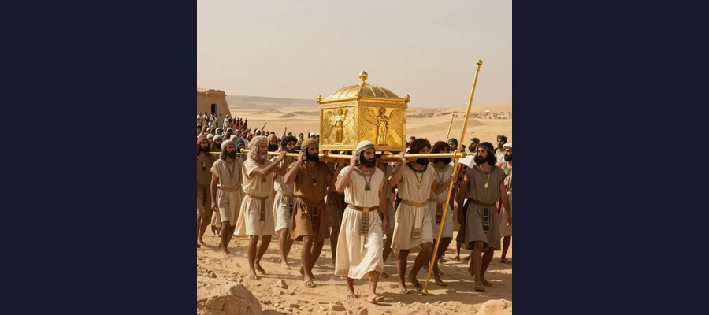
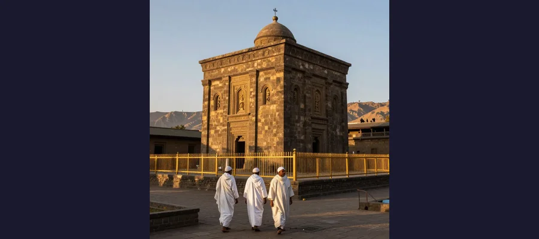

Ark of the Covenant: The Golden Chest That Contained God's Power and Vanished Without a Trace

The Ark of the Covenant, described in the Bible as a golden chest containing the Ten Commandments, was the most sacred object in ancient Israel before it vanished from history over 2,500 years ago.
According to the Book of Exodus, God gave Moses a set of very specific instructions on Mount Sinai. Build a chest of acacia wood, he was told — two and a half cubits long, a cubit and a half wide, and a cubit and a half high. Overlay it with pure gold, inside and out. Fashion a gold lid with two cherubim facing each other, their wings spread upward, overshadowing the mercy seat. Place inside the chest the stone tablets of the Ten Commandments. This was the Ark of the Covenant, and according to the Hebrew Bible, it was not merely a sacred object. It was the physical dwelling place of God on Earth — a portable throne from which the Creator of the universe spoke directly to Moses and directed the fate of an entire nation.
The Ark parted the Jordan River. It brought down the walls of Jericho. It struck down anyone who touched it without authorization. It was carried before the Israelite army into battle, and its presence was believed to guarantee divine protection and certain victory. For centuries, it resided in the innermost sanctum of Solomon's Temple in Jerusalem — the Holy of Holies, a room so sacred that only the High Priest could enter, and only once a year, on Yom Kippur. And then, sometime around 587 BCE, when Nebuchadnezzar's Babylonian armies destroyed Jerusalem and burned the Temple to the ground, the Ark of the Covenant simply vanished from history. No biblical writer mentions it again. No archaeologist has ever found it. No physical evidence of its existence has ever been recovered. It is the single most sought-after lost artifact in human history — and after two and a half millennia, it remains as elusive as the undecoded pages of the Voynich Manuscript or the disappearing ink of the Zodiac Killer's letters.
Build Me a Sanctuary: The Ark's Biblical Origins
The instructions for building the Ark appear in Exodus 25:10-22, where God tells Moses to construct a chest that will serve as the throne of His presence among the Israelites. The construction was carried out by Bezalel, a craftsman described in Exodus as having been filled with the Spirit of God, with wisdom, understanding, and skill in all kinds of craftsmanship. The Ark was built during the Israelites' forty-year wandering in the wilderness after their escape from Egypt, and it became the centerpiece of the Tabernacle — the portable sanctuary that accompanied the Israelites on their journey.
Physically, the Ark was relatively small: approximately 3.75 feet long by 2.25 feet wide by 2.25 feet high (about 1.1 x 0.7 x 0.7 meters). It was made of acacia wood — a durable, desert-hardwood — and overlaid with pure gold both inside and out. Four gold rings were attached to its lower corners, through which two gold-covered acacia poles were inserted for carrying. The lid, called the mercy seat (kapporet in Hebrew), was a slab of pure gold upon which two cherubim — winged angelic figures — were hammered, facing each other with their wings spread upward. According to Exodus, God would appear in a cloud above the mercy seat and speak to Moses from between the cherubim.
The contents of the Ark, as described in the New Testament Book of Hebrews (9:4), included three sacred objects: the stone tablets of the Ten Commandments, a golden jar of manna (the miraculous food God provided during the wilderness journey), and Aaron's rod that had miraculously budded as a sign of God's chosen priesthood. Later biblical references mention only the stone tablets, suggesting the other items may have been lost or removed at some point during the Ark's long history.
- Exodus 25:10-22 — God's instructions to Moses for constructing the Ark on Mount Sinai
- Exodus 37:1-9 — Bezalel builds the Ark according to the divine specifications
- Joshua 3:14-17 — The Ark parts the Jordan River as the Israelites cross into Canaan
- Joshua 6:6-20 — The Ark is carried around Jericho for seven days before the walls collapse
- 1 Samuel 4-6 — The Ark is captured by the Philistines, causing plagues, and is returned to Israel
- 2 Samuel 6:1-7 — Uzzah is struck dead for touching the Ark; David brings it to Jerusalem
- 1 Kings 8:1-9 — Solomon places the Ark in the Holy of Holies of the First Temple
- 2 Kings 25:8-10 — Nebuchadnezzar destroys Solomon's Temple (587 BCE); the Ark is not mentioned
⚡ The Power That Killed
One of the most dramatic stories associated with the Ark is the death of Uzzah. In 2 Samuel 6, King David is transporting the Ark to Jerusalem on a cart drawn by oxen. When the oxen stumble, Uzzah reaches out his hand to steady the Ark — a natural human reflex. God strikes him dead on the spot for touching the sacred object. The incident terrified David so deeply that he refused to bring the Ark into Jerusalem for three months, leaving it instead at the house of Obed-Edom the Gittite. The story illustrates a central biblical theme: the Ark was not a symbol of God's presence. It was God's presence, and the same power that could part rivers and topple cities could also destroy anyone who approached it without the proper reverence and authorization. Only the Kohathite Levites, a specific clan of the priestly tribe, were permitted to carry the Ark, and they were forbidden from touching it directly or even looking at its sacred contents.

The Ark of the Covenant carried by Israelite priests through the wilderness — a golden chest containing the Ten Commandments, believed to channel divine power capable of parting rivers and leveling city walls.
Plagues, Conquests, and the Road to Jerusalem
Before the Ark came to rest in Solomon's Temple, it led a life of extraordinary drama. It was carried before the Israelite army as they crossed the Jordan River into the Promised Land — the waters parted, according to Joshua 3, the moment the priests bearing the Ark stepped into the river. It was paraded around the city of Jericho for seven days, after which the walls famously collapsed. Whether one reads these accounts as literal history or theological allegory, they established the Ark as an object of immense, tangible power — not a passive relic but an active force on the battlefield.
Then came the Philistine capture. In 1 Samuel 4, the Israelites carried the Ark into battle against the Philistines, hoping its presence would guarantee victory. Instead, they were defeated, and the Ark was captured. The Philistines carried it to Ashdod and placed it in the temple of their god Dagon. According to 1 Samuel 5, the statue of Dagon fell face-down before the Ark — and the next morning fell again, this time with its head and hands broken off. Worse, the people of Ashdod were afflicted with tumors (often interpreted as bubonic plague or hemorrhoids). The Philistines moved the Ark to Gath, then to Ekron, and the plagues followed. After seven months of suffering, the Philistines loaded the Ark onto a cart drawn by two milk cows and sent it back toward Israelite territory, accompanied by a guilt offering of five gold tumors and five gold rats — one of the more peculiar episodes in biblical literature.
The Ark eventually made its way to Jerusalem, carried in triumph by King David after Uzzah's death delayed the journey. David danced before the Ark with such abandon that his wife Michal despised him for it. The Ark was housed in a tent in the City of David until David's son Solomon built the First Temple and installed it in the Holy of Holies — the innermost chamber of the most sacred building in the Israelite world. According to 1 Kings 8, when the priests placed the Ark in the Holy of Holies and withdrew, a cloud filled the Temple, "the glory of the Lord" so intense that the priests could not stand to minister. The Ark had found its home.
The Silence After the Fire
And then — nothing. In 587 BCE, Nebuchadnezzar II, king of Babylon, besieged Jerusalem, breached its walls, destroyed Solomon's Temple, and carried the Israelite elite into exile. The Babylonian destruction is described in detail in 2 Kings 25 and Jeremiah 52: the burning of the Temple, the looting of its treasures, the dismantling of its bronze pillars and bronze sea. These texts list the specific objects taken by the Babylonians — gold, silver, bronze vessels, precious objects. The Ark of the Covenant is never mentioned. Not as taken. Not as destroyed. Not as hidden. It simply disappears from the biblical record, as completely as if it had never existed.
This silence is deafening. The Ark had been the most important object in Israelite worship for five centuries. It was the throne of God. And when the Temple burned, no biblical writer recorded what happened to it. This omission has generated two and a half millennia of speculation, theory, and legend — and it remains the central mystery surrounding the Ark: was it destroyed in the Babylonian fire, its gold melted down and its acacia wood reduced to ash? Was it secretly removed before the destruction and hidden in a location known only to a trusted few? Or had it already been removed, years or even decades before Nebuchadnezzar's army arrived?
📚 The Copper Scroll's Hidden Treasures
Among the Dead Sea Scrolls discovered at Qumran in the 1940s and 1950s was a document unlike any other: the Copper Scroll (3Q15). Written on thin copper sheets — not parchment or papyrus — the scroll lists sixty-four locations where vast quantities of gold, silver, and sacred objects were hidden. Some scholars believe the list describes treasures from the Second Temple, hidden before the Roman destruction of Jerusalem in 70 CE. Others argue it refers to treasures from the First Temple — Solomon's Temple — hidden before the Babylonian invasion. Among the listed items are references to objects that some researchers have interpreted as possibly describing the Ark or its components. The Copper Scroll has never been fully decoded, and none of the treasures it describes have ever been found. But its existence raises the tantalizing possibility that the Ark — or at least a tradition of its hiding place — survived in written form long after the object itself vanished.

The Church of St. Mary of Zion in Aksum, Ethiopia, where tradition says the Ark of the Covenant has been guarded for nearly 3,000 years by a single monk who is the only person allowed to see it.
The Ethiopian Claim: Guardian of the Lost Ark
Of all the theories about the Ark's fate, the most extraordinary — and the most enduring — comes from Ethiopia. According to the Kebra Nagast ("The Glory of Kings"), a 14th-century Ethiopian epic, the Queen of Sheba visited King Solomon in Jerusalem and bore him a son named Menelik I. When Menelik grew up, he traveled to Jerusalem to meet his father. Solomon tried to persuade him to stay, but Menelik insisted on returning to Ethiopia. Before his departure, according to the Kebra Nagast, Menelik and a group of Israelite nobles secretly took the Ark of the Covenant with them — either with Solomon's covert blessing or through outright theft, depending on the version of the story. The Ark was carried to Aksum in northern Ethiopia, where it has remained ever since.
The Ethiopian Orthodox Tewahedo Church maintains that the Ark resides in the Church of Our Lady Mary of Zion in Aksum, housed in a small chapel called the Chapel of the Tablet. According to Ethiopian tradition, the Ark is guarded by a single monk — the Guardian of the Ark — who is appointed for life and is the only person permitted to enter the chapel and view the sacred object. When the Guardian dies, a new one is appointed. No outsider has ever been permitted to see the Ark, and the Ethiopian government has consistently refused requests from scholars and archaeologists to examine the chapel or its contents.
The claim is extraordinary, and skeptics have noted significant problems with it. The Kebra Nagast was written in the 14th century CE — roughly two thousand years after the Ark's supposed disappearance from Jerusalem — and its account of the Queen of Sheba's visit to Solomon has no corroboration in any contemporary source. The Ethiopian Orthodox Church's insistence on absolute secrecy makes verification impossible. And the church's own history suggests a more complex picture: the original Church of St. Mary of Zion in Aksum is believed to date to the 4th century CE, but the current structure was built in the 17th century under Emperor Fasilides, and the modern chapel was constructed in the 1950s under Emperor Haile Selassie. If the Ark has been in Aksum since the time of Solomon, as the tradition claims, it has survived through three thousand years of wars, invasions, and political upheaval in a region not known for stability.
- Hidden by Jeremiah — According to 2 Maccabees 2:4-8, the prophet Jeremiah hid the Ark, the Tabernacle, and the incense altar in a cave on Mount Nebo, sealing the entrance and declaring the location unknown until God gathers His people again
- Buried under the Temple Mount — Some scholars believe the Ark was hidden in a secret chamber beneath Solomon's Temple before the Babylonian invasion, a theory that has inspired numerous excavation attempts in Jerusalem
- Destroyed by the Babylonians — The simplest explanation: the Ark was melted down for its gold along with the rest of the Temple treasures when Nebuchadnezzar's army looted Jerusalem in 587 BCE
- Taken to Ethiopia — The Kebra Nagast tradition claiming Menelik I transported the Ark to Aksum, where the Ethiopian Orthodox Church guards it to this day
- Hidden at Qumran — Some researchers link the Copper Scroll's hidden treasure list to the Ark, suggesting it was concealed by the Essene community near the Dead Sea
- Taken to Rome or Ireland — Various fringe theories connect the Ark to the Knights Templar, the Vatican, or Hill of Tara in Ireland, but none have credible evidence
🎬 Raiders of the Lost Ark and the Power of Hollywood
Steven Spielberg's Indiana Jones and the Raiders of the Lost Ark (1981) did more to embed the Ark of the Covenant in popular imagination than any scholarly work. In the film, the Nazis discover the Ark's location in Egypt and attempt to weaponize its supernatural power. Indiana Jones intervenes, and the Ark — stored in a wooden crate — is sealed in a vast government warehouse, lost among thousands of identical crates. The film's depiction of the Ark's power (it melts faces) is Hollywood invention, but its central insight was genuinely profound: whoever possesses the Ark possesses a power too dangerous for any human institution to control. The film also drew on real elements — the Tanis connection (the Ark was said to have been taken to the Egyptian city of Tanis), the Nazi obsession with occult artifacts, and the idea that the Ark's location might be discoverable through ancient texts. Whether accurate or not, Raiders transformed the Ark from an obscure biblical artifact into a global cultural icon.
🔐 The Chest That Contained Infinity
The Ark of the Covenant sits at the intersection of faith, history, and archaeology — three domains that rarely agree and often contradict each other. For believers, the Ark was the literal throne of God, and its disappearance is a theological mystery that will be resolved only at the end of days. For historians, it was a sacred object of the ancient Israelite religion, probably constructed during the Exodus period and destroyed — like so many ancient artifacts — by the relentless churn of empire and war. For archaeologists, it is a tantalizing absence: an object so well-documented in textual sources that its physical nonexistence becomes a puzzle demanding a solution. The Ethiopian claim, like the undeciphered inscriptions on the Rosetta Stone before its decoding, offers the allure of a hidden truth guarded by an ancient institution. But unlike the Shroud of Turin, which can at least be examined and tested, the Ethiopian Ark is shielded by a wall of absolute secrecy that makes scientific inquiry impossible. The Great Sphinx of Giza has endured for four and a half thousand years, its secrets visible but unreadable. The Ark of the Covenant — if it ever existed at all — has endured by the opposite method: by being invisible, unreadable, and fundamentally unfindable. Perhaps that is the point. Perhaps the Ark's greatest power was not the ability to part rivers or topple walls but the ability to disappear so completely that the search for it would never end.
Frequently Asked Questions
What was inside the Ark of the Covenant?
According to the Book of Hebrews (9:4), the Ark contained three items: the stone tablets of the Ten Commandments, a golden jar of manna (the miraculous food provided to the Israelites in the wilderness), and Aaron's rod that had budded as a sign of God's chosen priesthood. Later biblical references, including 1 Kings 8:9, mention only the stone tablets, suggesting the other items may have been removed or lost at some point during the Ark's history.
Where is the Ark of the Covenant today?
Nobody knows. The Ethiopian Orthodox Church claims the Ark is housed in the Chapel of the Tablet adjacent to the Church of Our Lady Mary of Zion in Aksum, Ethiopia, guarded by a single monk who is the only person permitted to view it. This claim has never been independently verified. Other theories suggest the Ark was destroyed when the Babylonians burned Solomon's Temple in 587 BCE, hidden by the prophet Jeremiah on Mount Nebo, or concealed in a secret chamber beneath the Temple Mount in Jerusalem. No archaeological evidence supports any of these claims.
What powers did the Ark supposedly have?
According to the Hebrew Bible, the Ark possessed extraordinary divine power. It was credited with parting the Jordan River, causing the walls of Jericho to collapse, and afflicting the Philistines with plagues and tumors when they captured it. The Ark also struck down individuals who touched it without authorization, most famously Uzzah, who was killed for reaching out to steady the Ark when the cart carrying it stumbled. These accounts are found in the books of Exodus, Joshua, 1 Samuel, and 2 Samuel.
Is there any archaeological evidence for the Ark's existence?
No. No physical evidence of the Ark of the Covenant has ever been recovered. The only descriptions of the Ark come from biblical texts — primarily Exodus, Numbers, Deuteronomy, Joshua, 1 Samuel, 2 Samuel, 1 Kings, and 2 Chronicles. No contemporary non-biblical source from the ancient Near East mentions the Ark, and no archaeological excavation in Israel or elsewhere has uncovered any trace of it. The Copper Scroll from Qumran references hidden treasures but does not explicitly mention the Ark. The absence of evidence does not prove the Ark never existed — many ancient artifacts are known only from textual sources — but it means the question of its existence and current location remains entirely open.
Sources & References
- Wikipedia: Ark of the Covenant — Biblical account, construction, journey, and claims about current location
- Britannica: Ark of the Covenant — Summary of the Ark's significance in Israelite religion and its disappearance
- Wikipedia: Church of Our Lady Mary of Zion — Ethiopian Orthodox church claiming to house the Ark in Aksum
- Bible Study Tools: The Ark of the Covenant — Detailed biblical narrative and theological significance
- Wikipedia: Copper Scroll — The Dead Sea Scroll listing hidden treasures possibly connected to the Ark
- Bible Hub: Ark of the Covenant — Comprehensive topical encyclopedia of Ark references in scripture
- Pilgrimaps: The Ark of the Covenant — A Pilgrimage to Axum — Ethiopian tradition and the claim of the Aksum church
📖 Recommended Reading
Want to learn more? Check out Ark of the Covenant Pamphlet: Purpose and Symbolism of the Ark: Rose Publishing: 9781628628579 on Amazon for a deeper dive into this fascinating topic. (As an Amazon Associate, we earn from qualifying purchases.)